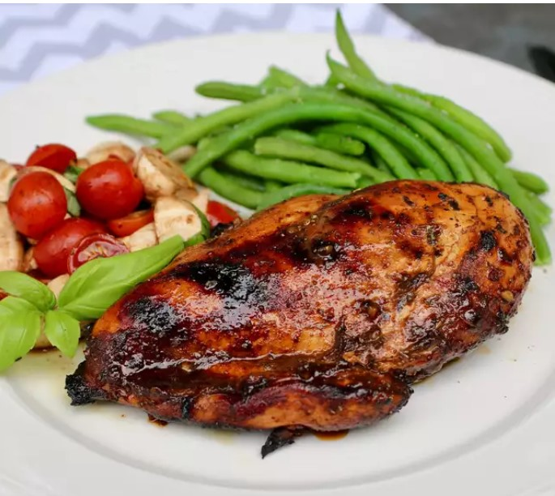

Tasty Grilled Balsamic Chicken
A delicious and easy way to make honey-balsamic grilled chicken breasts.
It is perfect to add to your
favorite salad or by itself with your favorite sides.
Ingredients
- 1 cup balsamic vinegar
- 1/2 cup olive oil
- 1/2 cup honey
- 2 tablespoons Dijon mustard
- 4 cloves garlic, minced
- 2 teaspoons dried basil
- 2 teaspoons salt
- 2 teaspoons ground black pepper
- 4 boneless, skinless chicken breasts
Directions
-
Whisk together balsamic vinegar, olive oil, honey, Dijon mustard,
garlic, basil, salt, and pepper in a small bowl.
-
Combine chicken and 1/2 of the marinade in a resealable plastic bag.
Marinate chicken for 1 hour to overnight. Reserve the other 1/2 of the
marinade until grilling.
-
Preheat an outdoor grill for medium-high heat, to approximately 400
degrees F (200 degrees C). Lightly oil the grate.
- Remove chicken from marinade and discard used marinade.
-
Place chicken on the hot grill and baste with reserved marinade. Lower
grill to medium and cook until chicken is no longer pink in the center
and the juices run clear, 6 to 8 minutes per side. Baste with marinade
on each side when flipping chicken. Chicken should reach an internal
temperature of 165 degrees F (74 degrees C). Remove chicken from grill,
cover, and let rest for 5 to 10 minutes before serving.
Back to top
Back home